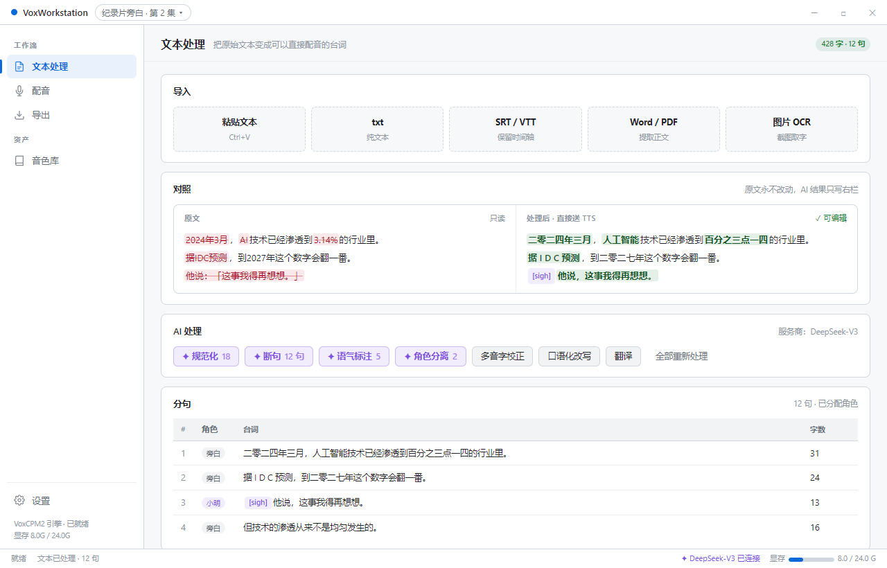
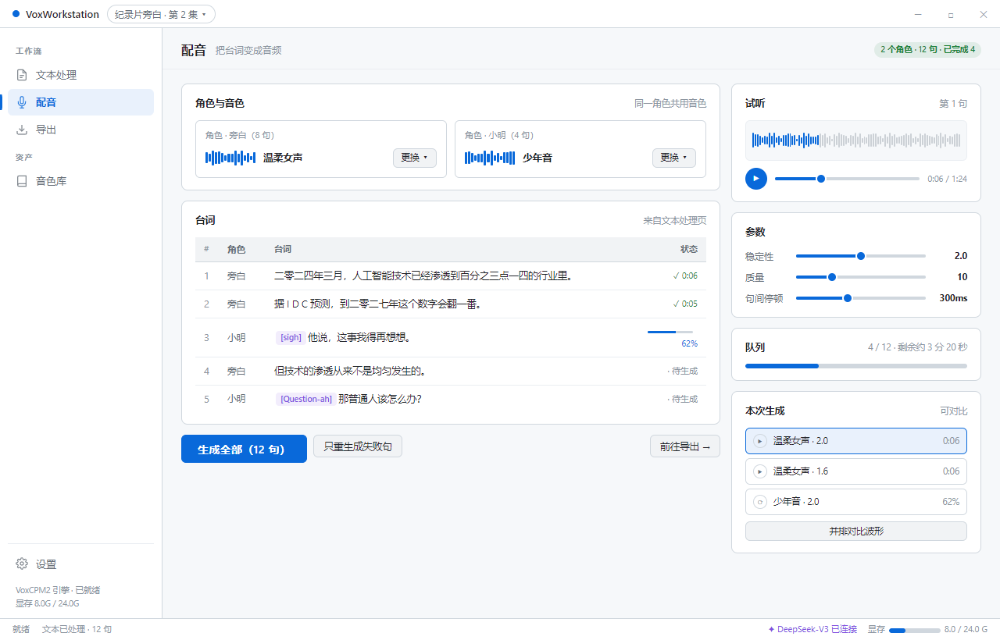
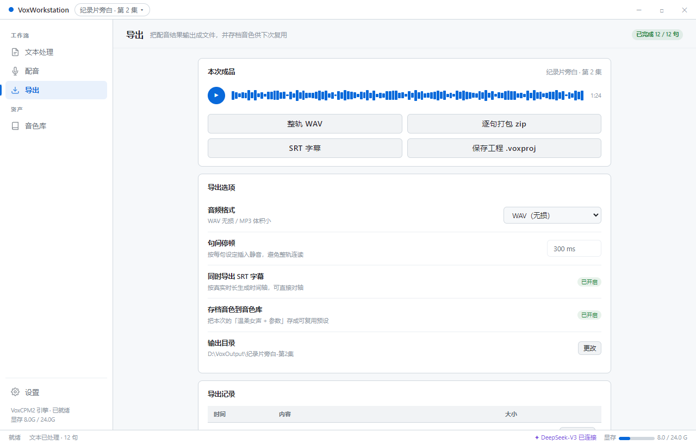
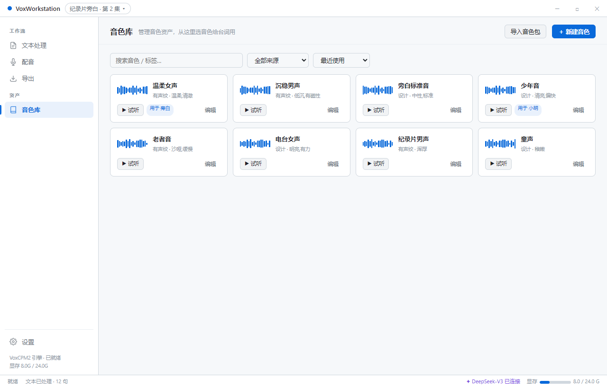
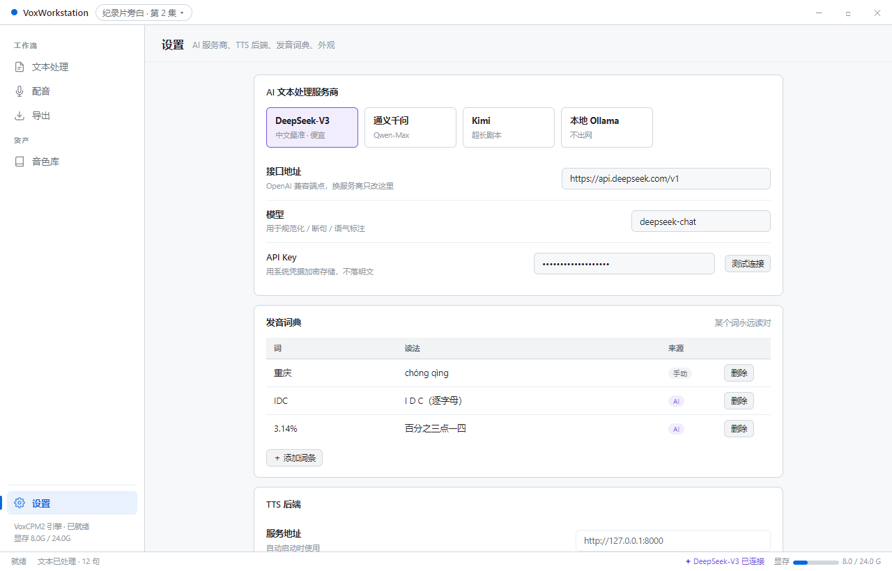

页面划分的唯一标准是「这一页只干一件事」。整条链是
文本 → 配音 → 导出，加上两个不属于流程的东西：音色资产和配置。
| 页面 | 唯一职责 | 产出 |
|---|---|---|
| 文本处理 | 把原始文本变成可以直接配音的台词 | 干净分句 |
| 配音 | 把台词变成音频 | 音频片段 |
| 导出 | 把音频变成可交付的文件 | 成品文件 |
| 音色库 | 管理音色资产 | 可复用音色 |
| 设置 | 一切配置 | — |
侧边栏按 工作流 / 资产 / 配置 三段分组 —— 让用户一眼看出"前三个是有顺序的，第四个是随时用的，最后一个是配置"。





你说要单一性，那导出就不该只是配音页的一个按钮。单独成页后它能承担三件事： 本次成品（四种产出）、导出选项（格式/停顿/字幕/存档）、 导出记录（昨天导的那版在哪，一键打开目录）。第三件是塞在弹层里做不到的。
页与页之间用「保存并前往配音 →」「前往导出 →」这种明确的交接按钮串起来， 而不是靠用户自己想去哪。
它本质是一份配置数据（词 → 读法），不是每天都编辑的东西。放在设置的独立分组里， 文本处理页点「多音字校正」时把新词条写进来，两边共用同一份数据。
音色设计 / 可控克隆 / 极致克隆 是获得音色的三种手段， 结果都落到同一个音色库里。放在音色库页做弹层，比做成第三个平级页面更符合"单一性" —— 因为它的产出物归属音色库。顺带修掉现在"必须先存才能听"的问题：先试听，满意再保存。
后端 server.py 里至今没有任何音乐相关接口，
那个页面从第一天起按钮就是灰的。占一个一级入口会让整个导航不可信。
接上了再加回来，或者放到设置里当实验功能。
之前给你的 A–H 功能清单，现在按页面重新归位：
| 页面 | 包含的功能 |
|---|---|
| 文本处理 | A1 粘贴 · A2 导入 SRT · A3 Word/PDF · A4 图片 OCR B1 规范化 TN · B2 智能断句 · B3 语气标注 · B4 角色分离 · B5 多音字校正 · B6 口语化改写 · B7 翻译 · B8 术语一致性 分句预览与手工微调 |
| 配音 | C1 逐句生成 + 队列 · C2 批量生成 · C3 重生成失败句 · C4 多角色分配音色 · C5 句间停顿 · C6 多版本 A/B 对比 试听播放器 · 参数（稳定性 / 质量） |
| 导出 | C7 整轨拼接 · D1 整轨 WAV/MP3/FLAC · D2 逐句打包 · D3 SRT 字幕 · D4 工程存档 · 导出记录 |
| 音色库 | E1 音色管理 + 波形 + 试听 · E2 生成结果存档为音色 · E3 标签搜索 · E4 音色包导入导出 · E5 新建音色（三模式 + 先试听后保存） |
| 设置 | H1 AI 服务商 · H2 API Key 加密存储 · H3 TTS 后端（已有） · H4 导出默认值 G1 发音词典 · G4 诊断与日志 · 外观主题 |
| 全局 | F1 多项目（标题栏切换） · F2 自动保存 · G2 快捷键 |
AI 统一走 OpenAI 兼容接口。DeepSeek、通义千问、Kimi、智谱、本地 Ollama
都提供 /v1/chat/completions，只实现一个客户端，把
baseURL + model + key 做成设置项。换服务商不用改代码，断网切本地，
某家涨价换别家。
| 问题 | 我的建议 |
|---|---|
| 这 5 个页面认可吗？ | 认可就按这个动手 |
| 「导出」单独成页 vs 塞回配音页？ | 单独成页（能承载导出记录） |
| 音乐模块删还是留？ | 删（后端没接口） |
| 先做哪几个页面？ | 文本处理 + 配音先跑通链路，再补导出/音色库/设置 |
这是设计稿，renderer/ 里的代码没有动。
当前应用跑的还是「左侧文字侧边栏 + 明亮现代 / 黑白水墨双主题」那一版。